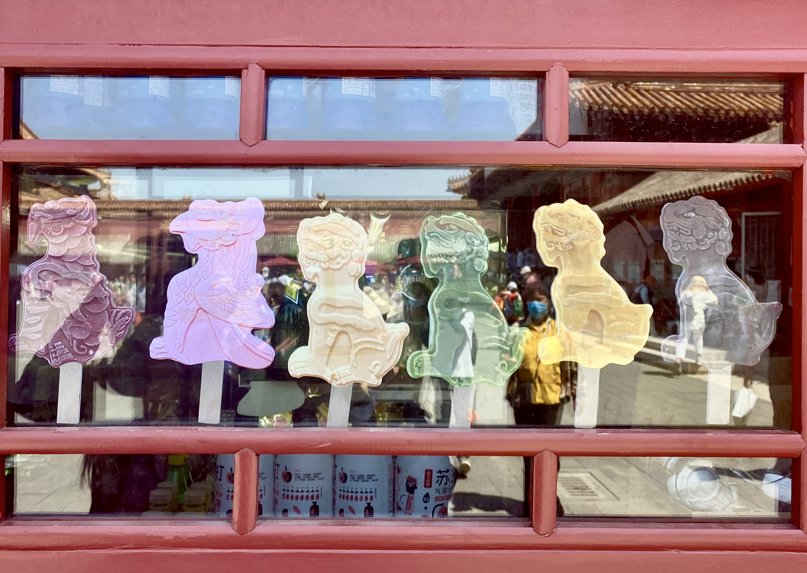

Zhi Zi BBQ (炙子烤肉), a traditional Chinese specialty made with select mutton lamb or beef sliced as the main ingredient with scallion coriander and seasoning sauces. The meat is broiled on a round grill.
Photo By: Yuye Jiang May 2021
Fried Sauce Noodles:
Zha Jiang Mian (炸酱面), or “Fried Sauce Noodles…” So famous in China that the mere mention of it immediately makes people think of Beijing. It’s sold everywhere—from street vendors to restaurants in five star hotels.Prices can vary from (about $1.60) to 100RMB, but trust me: higher prices don’t necessarily guarantee better taste. A dish of perfectly chewy noodles with a rich, meaty sauce, Zha Jiang Mian is just another one of those perfect dishes that you do not really mess with too much.
Photo By: Yuye Jiang May 2021Try cook at home
Street food:
When you are at Nanluogu Alley, you can meet many tourists holding sugarcoated haws on a stick, kebab, hot dog, roast crab and other snacks while walking around. You can try some of them, too. At #49 Nanluoguxiang, there is a Wenyu Cheese Shop which boasts having the best cheese in Beijing. There is usually a long queue in front of the shop. Though people differ in taste, the cheese is still worth a try. Apart from that, Chinese and western restaurants, cafes, and bars are also available. For example, Pass By Bar serves special pizza and Nepalese drinks. The list can goes on and on and waits for you to explore.
Photo By: Yuye Jiang May 2021See Nanluogu Allye
Beasts Ice-cream:
The Beijing Palace Museum has launched several new relics and beasts ice cream". The flavors include chocolate, mango, matcha, strawberry, and vanilla. The ice-pops are shaped like beasts on the roofs of palaces and famous artifacts of the museum. Such unique and flavorful products are very popular among visitors!

Photo By: Yuye Jiang May 2021